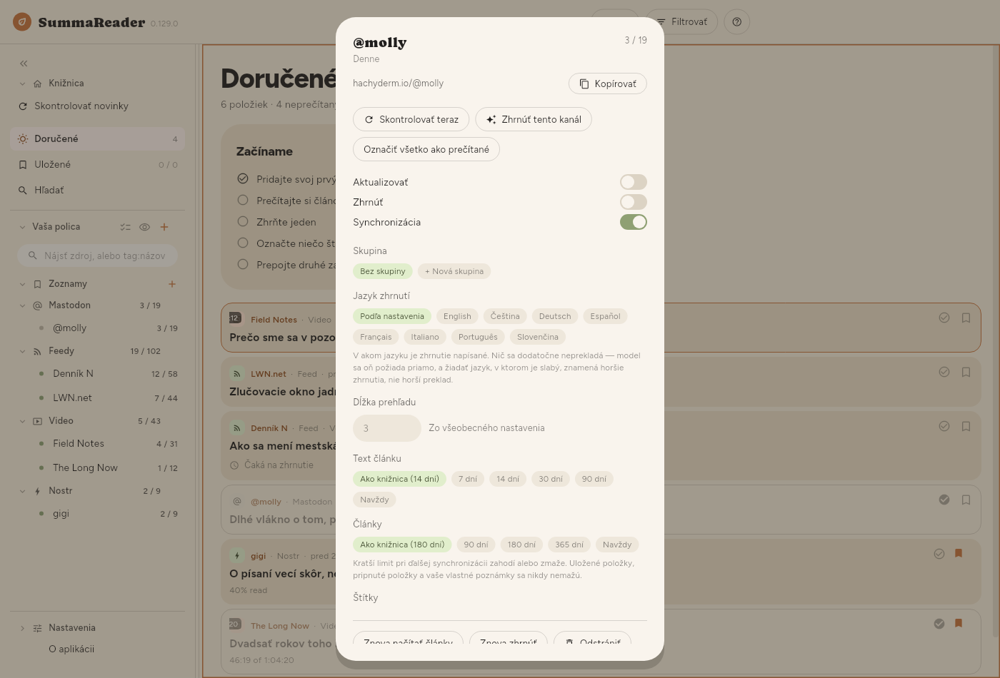
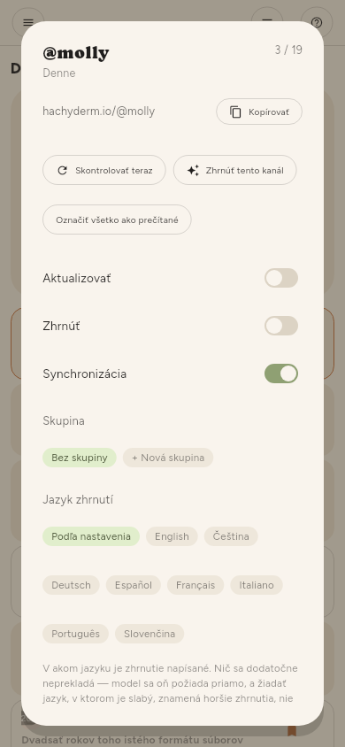

← Uchovávanie · Obsah · Synchronizácia →
Správa zdrojov
Jeden kanál
Koliesko na riadku police (zobrazí ho Vybrať viac alebo dlhé stlačenie) alebo koliesko vedľa mena zdroja v otvorenom článku otvorí kanál:


| Skontrolovať teraz | Stiahne tento kanál |
| Zhrnúť tento kanál | Všetko z neho, čo na zhrnutie čaká |
| Označiť všetko ako prečítané | Všetko z neho |
| Aktualizovať | Či ho kontroly zahŕňajú |
| Zhrnúť | Či ho kontroly zhŕňajú |
| Synchronizácia | Či sa jeho články prenášajú na vaše ďalšie zariadenia |
| Skupina, Jazyk zhrnutí | Kde je na polici a jeho vlastný jazyk zhrnutí |
| Znova načítať články | Znova stiahne text, ktorý zlyhal |
| Znova zhrnúť | Zahodí jeho zhrnutia a urobí ich znova |
| Odstrániť | Najprv sa opýta a povie, čo to bude stáť |
Znova zhrnúť použite po zmene jazyka zhrnutí alebo modelu — článok, ktorý už zhrnutie má, sa inak nikdy znova nezhŕňa.
Mnoho kanálov
Nastavenia › Základné › Zdroje › Zdroje ponúka rovnaké ovládacie prvky pre celý zoznam, s filtrom a začiarkávacím políčkom, takže „každý kanál na YouTube, ktorý som importoval minulý týždeň“ je jedna akcia, nie tristo.